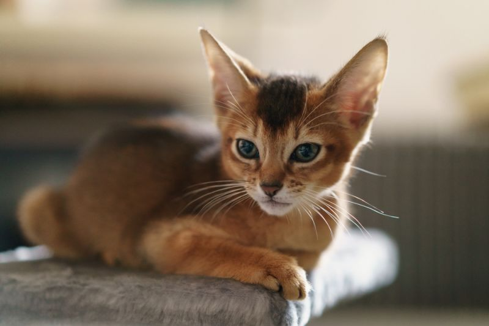

Статус: ищет хозяина
Добрая, ласковая кошечка с голубыми как воды Байкала глазами.
Возраст: 1 год
Любит смотреть в окно и наблюдать за снежинками. Ищет добрую хозяйку с такиими же голубыми глазами.
Мишка
Возраст: 9 месяцев
Порода: нет
Болезни: нет
Статус: ищет хозяина
Любопытный кот, который вечно старается утащить еду со стола.
Возраст: 9 месяцев
Мечтает обрести семью без вредных привычек и любящих вкусно покушать.
Лиза
Возраст: 2 года
Порода: нет
Болезни: нет
Статус: нашла хозяина
Очень интелегентная кошка со средоточенным взгялдом.
Возраст: 2 года
Готова сидеть на мягкой перине часами и наблюдать за ходом часов в гостиной.
Пугли
Возраст: 1,5 года
Порода: да
Болезни: да
Статус: нашла хозяина
Очень игривый кот с большими красивыми глазами.
Возраст: 1,5 года
Любит активные игры на свежем воздухе с детьми. Ищет семью спортсменов.

Конди
Возраст: 3 месяца
Порода: нет
Болезни: да
Статус: ищет хозяина
Этот малыш с красивыми ушками как у рысы любит играть с мячиком.
Возраст: 3 месяца
Ищет семью без вредных привычек и большой душой для активных игр.
Колобок
Возраст: 3 года
Порода: да
Болезни: нет
Статус: ищет хозяина
Очень артистичный кот, который любит распевать песни.
Возраст: 3 года
Обажает подпевать артистам из "Голубого огонька", а также людям, поющим в душе.
Пушистик
Возраст: 1,5 год
Порода: да
Болезни: да
Статус: ищет хозяина
Обладатель самой красивой и шелковистой шерстки.
Возраст: 1,5 года
Ищет молодую пару груммеров, желательно без других домашних животных.
Пантера
Возраст: 5 месяцев
Порода: да
Болезни: нет
Статус: нашла хозяина
Крошка с редким глянцевым шоколадным окрасом.
Возраст: 5 месяцев
Этот малыш обажает играть с маленькими детьми и спать под батареей. Ищет любящих родителей.
Сопятка
Возраст: 3 года
Порода: нет
Болезни: да
Статус: ищет хозяина
Кот, который всегда всех во всем подозревает.
Возраст: 3 года
Этот кот станет незаменимым членом семьи и другом для семьи, где есть параноики.
Соня
Возраст: 9 месяцев
Порода: да
Болезни: да
Статус: ищет хозяина
Кошечка с лунными глазками и мягким характером.
Возраст: 9 месяцев
Эта пушистая домоседка ищет крепкую семью без маленьких детей.